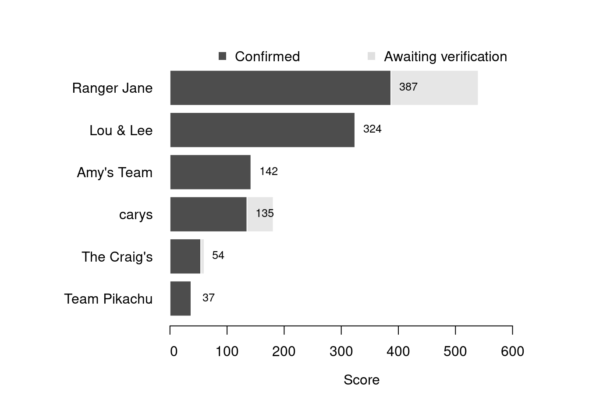

Content
You can view all the wildlife recorded at this event on iNaturalist.


| Records | 113 |
| Species | 56 |
| Verified species | 48 |
| Observers | 7 |
| Potential score | 1,067 |
| Confirmed score | 757 |
| Top verified species | Delesseria sanguinea |
| Top species rarity score | 36 |
| Registered participants | 10 |
| Children attending | 7 |
Congratulations to Ranger Jane for taking the gold medal in this BioBlitz Battle! And well done to everyone for a great game and some fantastic wildlife finds.
| Team | Records | Potential Score | Confirmed Score |
|---|---|---|---|
| Ranger Jane | 46 | 540 | 387 |
| Lou & Lee | 29 | 324 | 324 |
| Amy’s Team | 8 | 142 | 142 |
| carys | 19 | 181 | 135 |
| The Craig’s | 7 | 60 | 54 |
| Team Pikachu | 4 | 37 | 37 |

| Participant | Records | Potential Score | Confirmed Score |
|---|---|---|---|
| louber3443 | 29 | 324 | 324 |
| Jane Dixon | 36 | 379 | 254 |
| Amy | 8 | 142 | 142 |
| caryst | 19 | 181 | 135 |
| Sarah | 10 | 169 | 133 |
| debsbon | 7 | 60 | 54 |
| megas19 | 4 | 37 | 37 |
A total of 7 species have a verified rarity score of 27 or higher.


Community verified records only
Click any image to view the taxon on iNaturalist.
| Name | Rarity Score | |
|---|---|---|

|
Delesseria sanguinea | 36 |

|
Cladophora rupestris | 33 |

|
Thick-lipped Dogwhelk - Tritia incrassata | 31 |

|
ladder ascidian - Botrylloides leachii | 28 |

|
Witch’s hair - Desmarestia aculeata | 27 |

|
European Plaice - Pleuronectes platessa | 27 |

|
Beanweed - Scytosiphon lomentaria | 27 |

|
Sea Cauliflower - Leathesia marina | 26 |

|
Bristly Mail-shell - Acanthochitona crinita | 25 |

|
Colonial Seasquirt - Morchellium argus | 24 |

|
Sea Comb - Plocamium cartilagineum | 23 |

|
Mermaid’s Tresses - Chorda filum | 22 |

|
Seashore Springtail - Anurida maritima | 21 |

|
Brown Shrimp - Crangon crangon | 20 |

|
Common Goby - Pomatoschistus microps | 20 |

|
Sea-oak - Halidrys siliquosa | 18 |

|
Pink Plate Weeds - Lithophyllum incrustans | 18 |

|
Side-gilled Seaslug - Berthella plumula | 17 |

|
Coil Worm - Spirorbis spirorbis | 17 |

|
Puff-ball Algae - Colpomenia | 15 |

|
Bread-crumb Sponge - Halichondria panicea | 15 |

|
Dulse - Palmaria palmata | 14 |

|
Keeled Tubeworm - Spirobranchus triqueter | 14 |

|
Dwarf Brittle Star - Amphipholis squamata | 13 |

|
Longspined Bullhead - Taurulus bubalis | 13 |

|
Star Tunicate - Botryllus schlosseri | 12 |

|
Oarweed - Laminaria digitata | 12 |

|
Thongweed - Himanthalia elongata | 11 |

|
Rockpool Prawn - Palaemon elegans | 11 |

|
Grey Topshell - Steromphala cineraria | 11 |

|
Grey Mail-shell - Lepidochitona cinerea | 10 |

|
Channelled Wrack - Pelvetia canaliculata | 10 |

|
Northern Acorn Barnacle - Semibalanus balanoides | 10 |

|
Broadleaf Sea Lettuce - Ulva lactuca | 10 |

|
Common Sea Star - Asterias rubens | 9 |

|
Velvet Swimming Crab - Necora puber | 9 |

|
Common Hermit Crab - Pagurus bernhardus | 9 |

|
Purple Topshell - Steromphala umbilicalis | 9 |

|
Gutweed - Ulva intestinalis | 9 |

|
Atlantic Beadlet Anemone - Actinia equina | 8 |

|
Knotted Wrack - Ascophyllum nodosum | 8 |

|
Edible Crab - Cancer pagurus | 8 |

|
Saw Wrack - Fucus serratus | 8 |

|
bladder wrack - Fucus vesiculosus | 8 |

|
Common Periwinkle - Littorina littorea | 8 |

|
Atlantic Dogwhelk - Nucella lapillus | 8 |

|
Common European Limpet - Patella vulgata | 8 |

|
European Green Crab - Carcinus maenas | 7 |